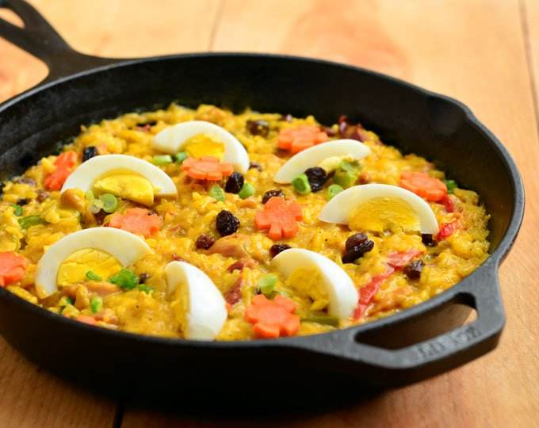

Bringhe
Bringhe is the perfect one-pot meal for all your special celebrations! Made with glutinous rice, chicken, chorizo de bilbao, vegetables, and coconut milk, this Filipino-style Paella is hearty, tasty, and sure to be a crowd favorite.
Recipes
- Bone-in or boneless chicken
- Pork shoulder
- Chorizo de bilbao
- Prawn
- Ham
- Vienna sausage
- Chicken liver and gizzard
- Green peas
- Garlic
- Bell pepper
- Potatoes
- raisins
Procedures
- The recipe calls for unwashed rice. If you prefer to wash the rice, make sure to drain well using a fine-mesh sieve as the extra moisture might affect consistency and make the bringhe too wet or mushy.
- The dish traditionally uses cut-up bone-in chicken parts, but I like to use boneless chicken meat as they’re easier to eat with no bones to pick through.
- Turmeric powder is added for flavor and color. If you prefer, you can swap the powder with one thumb-sized fresh turmeric or luyang dilaw. Saute the peeled and julienned root with the onions and garlic to draw out the yellow color.
- When the liquid is mostly absorbed, cover the rice mixture with banana leaves and then cover tightly to add aroma and to seal in the heat.
- The best part of paella in my opinion is what’s called “socarrat” or dry crust on the bottom. After the rice is tender, transfer to a wide pan lined with banana leaves. Cover with banana leaves, and cook on medium heat until the bottom forms a crust.